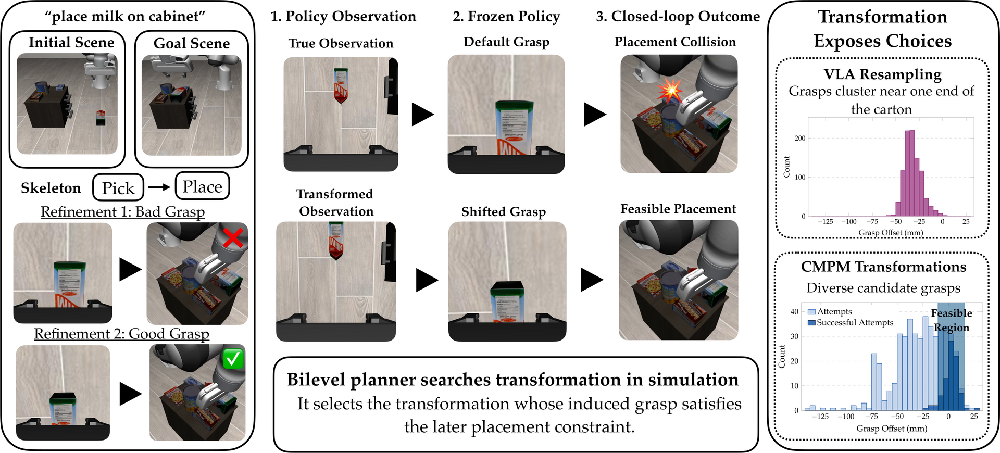
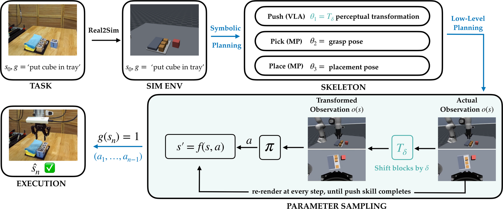

Chaining Visuomotor Skills for Constrained Manipulation
Through Perceptual Manipulation
Under review

Abstract
Abstract goes here.
Method
Method summary goes here.

Tasks
Task overview goes here.
figure
figure
figure
figure
Results
Results summary goes here.
results figure
Videos
Rollout description goes here.
video
video
video
BibTeX
@inproceedings{anonymous,
title = {Chaining Visuomotor Skills for Constrained Manipulation
Through Perceptual Manipulation},
author = {Anonymous},
booktitle = {},
year = {}
}